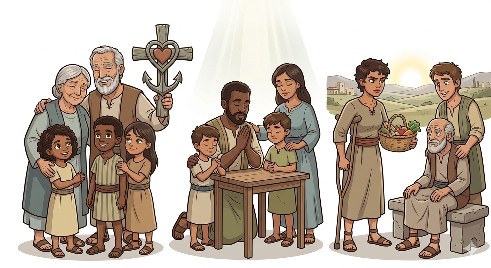
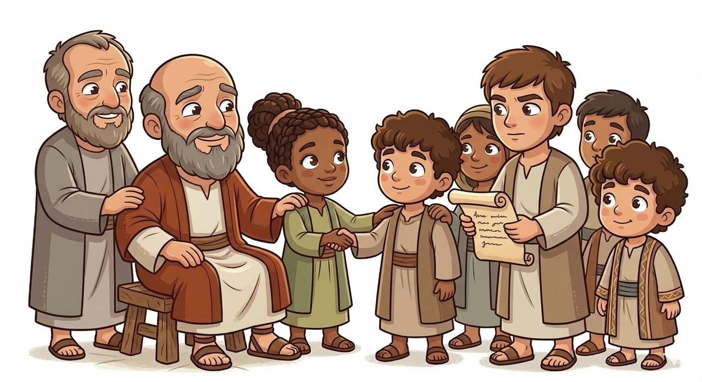
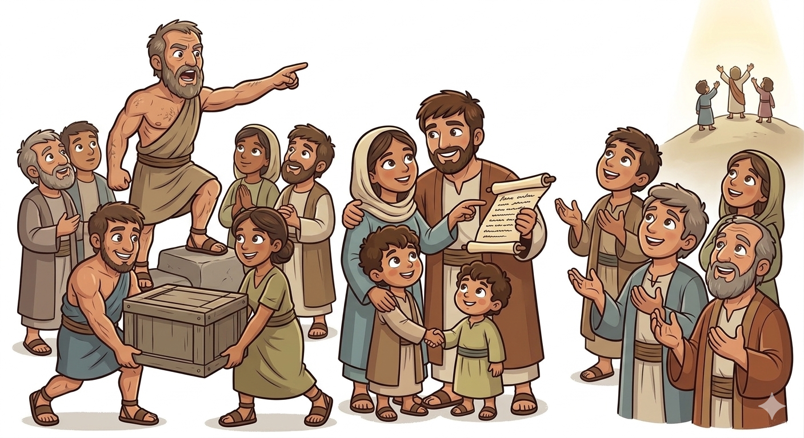
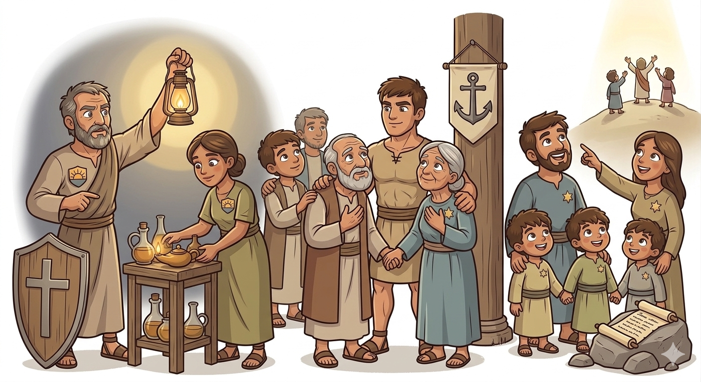
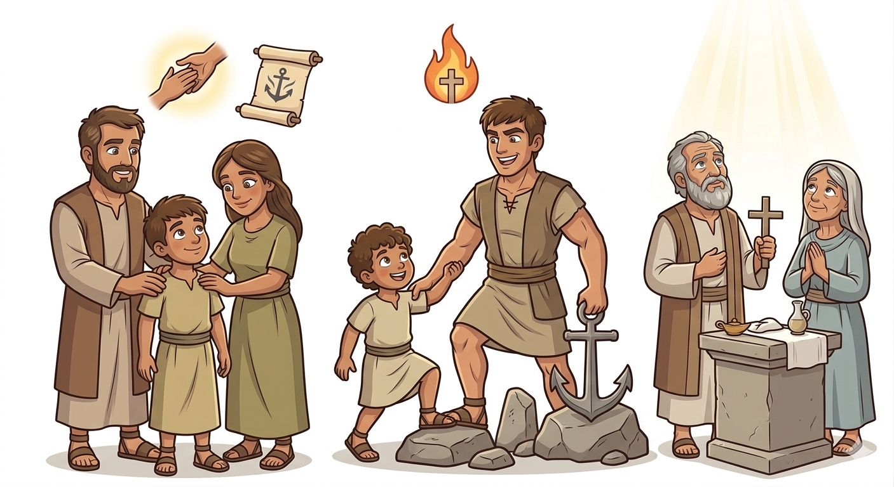
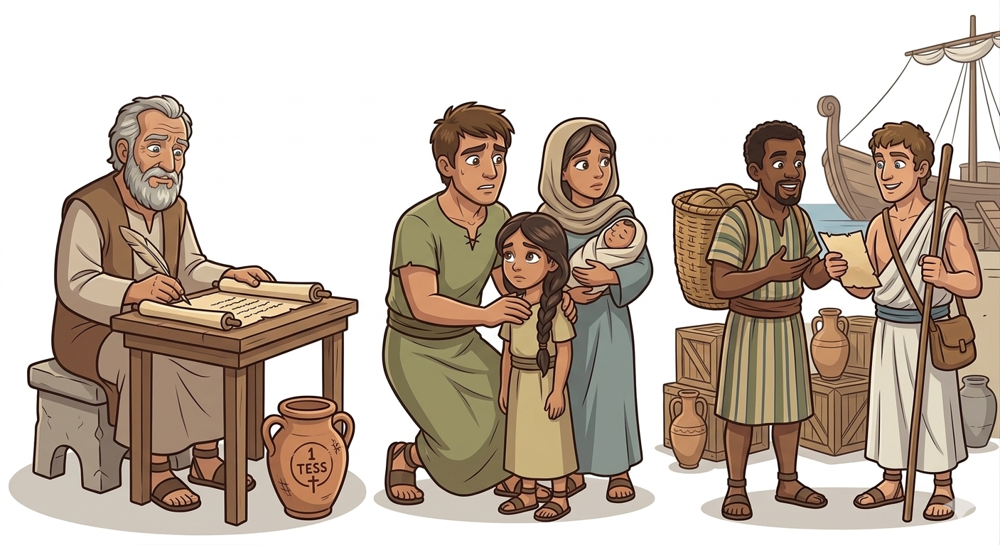

Fé, Amor e Esperança na Volta de Jesus — Um Resumo Visual para Crianças
Quando a vida ficar difícil, não desanime não,
Tenha fé em Jesus, amor no coração,
E esperança que Ele voltará um dia,
Para nos buscar com grande alegria!
📖 1 Tessalonicenses 1:3
Paulo ensinou: "Orem sempre, sem cessar",
Em todo tempo, Deus quer nos escutar,
De manhã, à tarde, à noite também,
Converse com Jesus, seu melhor amigo, amém!
📖 1 Tessalonicenses 5:17
Ninguém sabe quando Jesus vai chegar,
Por isso, preparado você deve estar,
Vivendo com bondade, fazendo o bem,
Para quando Ele voltar, estar pronto também!
📖 1 Tessalonicenses 5:2

O apóstolo que escreveu esta carta cheia de amor e encorajamento aos cristãos de Tessalônica.
Companheiro de Paulo na missão, ajudando a espalhar as boas notícias de Jesus.
Igreja jovem e corajosa que enfrentava perseguições, mas permanecia firme na fé.
Paulo elogia os tessalonicenses por sua fé forte, mesmo quando eram perseguidos por seguir Jesus.
A carta ensina sobre amar uns aos outros como uma família, cuidando e ajudando sempre.
Paulo conforta a igreja com a promessa de que Jesus voltará para buscar Seus filhos!


Nos ensina a estar sempre prontos para a volta de Jesus, vivendo de maneira que O agrada.
Mostra que podemos permanecer firmes mesmo quando as coisas ficam difíceis.
Nos lembra que Jesus voltará e que um dia estaremos com Ele para sempre!
Paulo escreveu esta carta para encorajar os cristãos de Tessalônica a continuarem fortes na fé, mesmo enfrentando perseguições e dificuldades. Era como um abraço de longe, dizendo: "Não desistam! Vocês estão indo muito bem!"
O objetivo era fortalecer a igreja para que não desanimasse, mas continuasse seguindo Jesus com alegria, amor e esperança, sabendo que Ele cuida de cada um de nós.


1 Tessalonicenses é uma das cartas mais antigas do Novo Testamento! Foi escrita por volta do ano 50 d.C., apenas cerca de 20 anos depois que Jesus subiu ao céu.
Isso significa que essa carta já tem quase 2000 anos e continua ensinando pessoas do mundo inteiro sobre fé, amor e esperança! 🌍✨
© 2025 - Trilho Kids
Desenvolvido com ❤️ para crianças